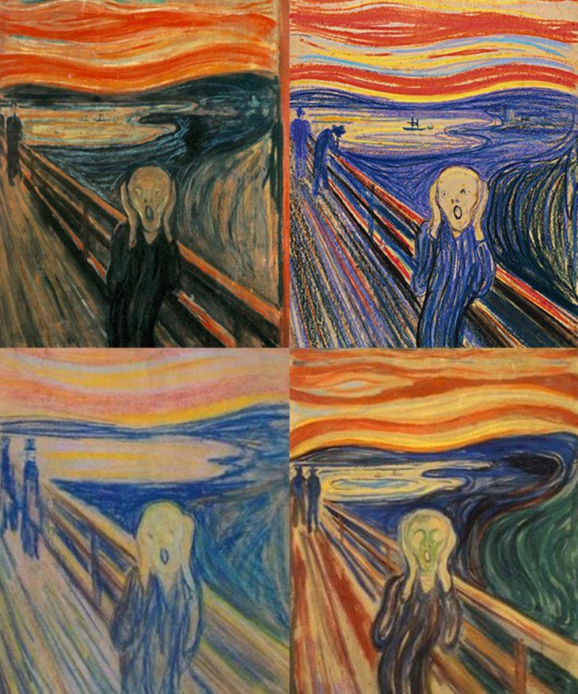
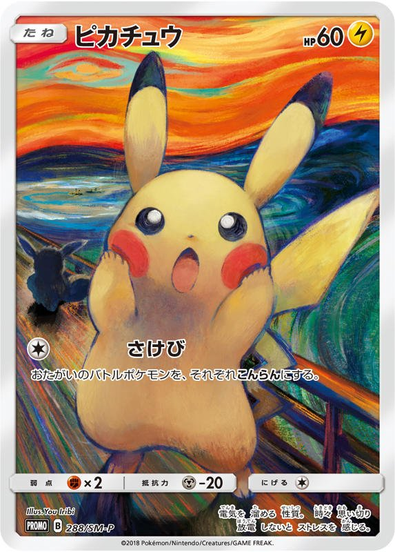

Edvard Munch skapte den første versjonen av Skrik i 1893. Det er et av de mest ikoniske bildene i kunsthistorien, ofte omtalt som "modernismens Mona Lisa". Maleriet viser en androgyn, hodeskallelignende skikkelse som står på en bro og holder hendene for ørene under en virvlende, blodrød himmel. Munch beskrev inspirasjonen i dagboken sin: «Jeg gikk langs veien med to venner da solen gikk ned; plutselig ble himmelen blodrød. Jeg stoppet og lente meg mot gjerdet, følte meg ubeskrivelig sliten... Jeg hørte naturens enorme, uendelige skrik.»
Verket er et sentralt stykke i Munchs Livsfrisen, som utforsker temaer som kjærlighet, angst og død. Munch lagde fire hovedversjoner av motivet mellom 1893 og 1910: to oljemalerier og to pasteller. Maleriet fra 1893 tilhører Nasjonalmuseet i Oslo, mens en senere versjon fra 1910 tilhører Munchmuseet.
I dag er Skrik en globalt gjenkjennelig figur som fortsatt preger populærkulturen, fra filmer og memes til mote og reklame. I 2018 lanserte Pokémon et samlekort-sett der Pikachu, Eevee, Psyduck, Mimikyu og Rowlet gjenskaper den ikoniske skrik-posituren. Kortene, som ble laget i forbindelse med en Munch-utstilling i Tokyo, er i dag svært ettertraktede samlerobjekter som viser hvordan klassisk kunst fortsetter å inspirere nye generasjoner.

